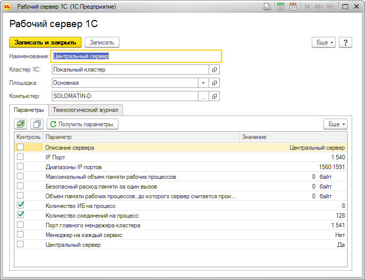

Данная форма позволит вам заполнить настройки рабочего сервера, а так же параметры, значения которых необходимо контролировать.

В данном случае, если настройка "Количество ИБ на процесс" или "Количество соединений на процесс" данного рабочего сервера, полученная при мониторинге кластера будет отличаться от указанного значения, то будет создан инцидент с уровнем "Предупреждение". При возвращении значения к эталонному инцидент автоматически будет закрыт.